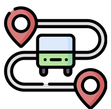

<mat-toolbar class="main-container">
    <a mat-button routerLink="/">
        
        Home
    </a>
    <a mat-button routerLink="/desplazarse">Desplazarse</a>
    <a mat-button routerLink="/soporte">Soporte</a>
    <a mat-button routerLink="/foro">Foro</a>
</mat-toolbar>
